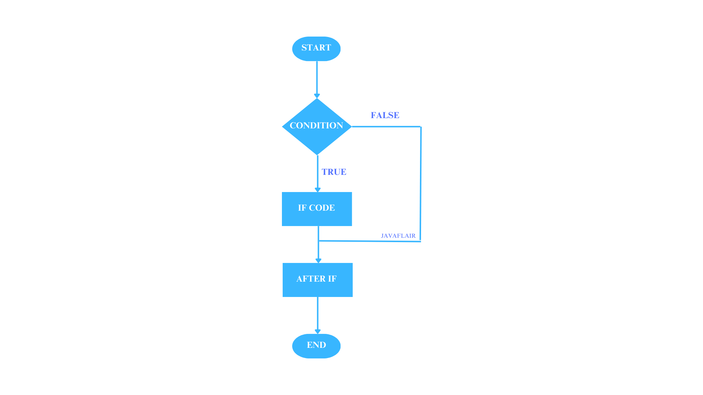
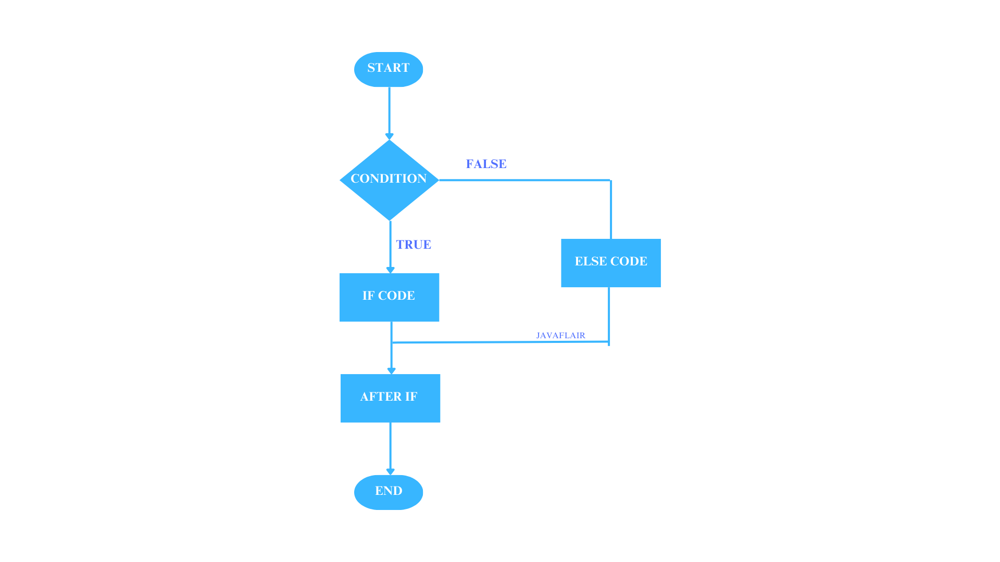
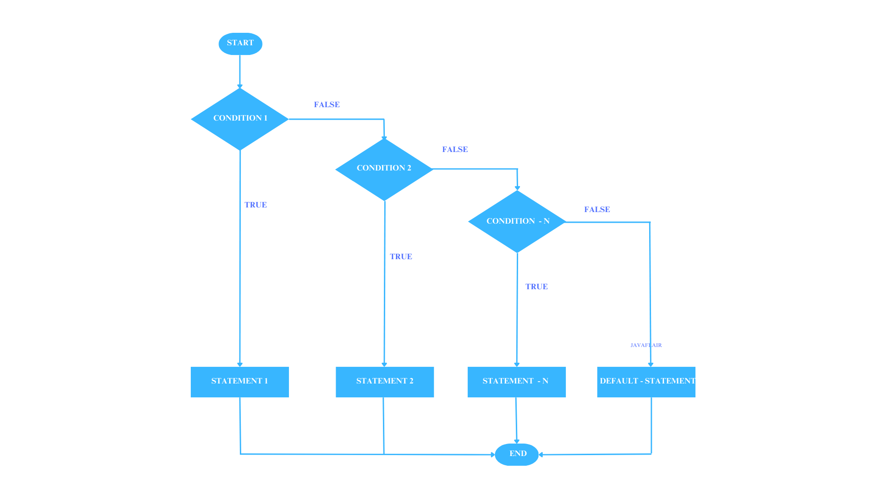
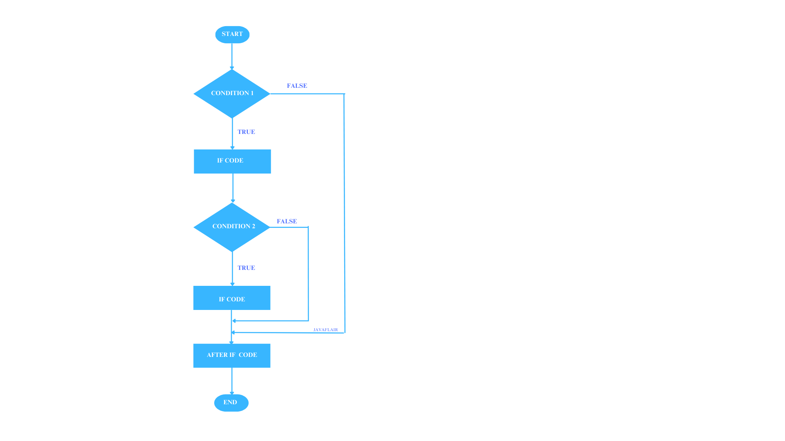
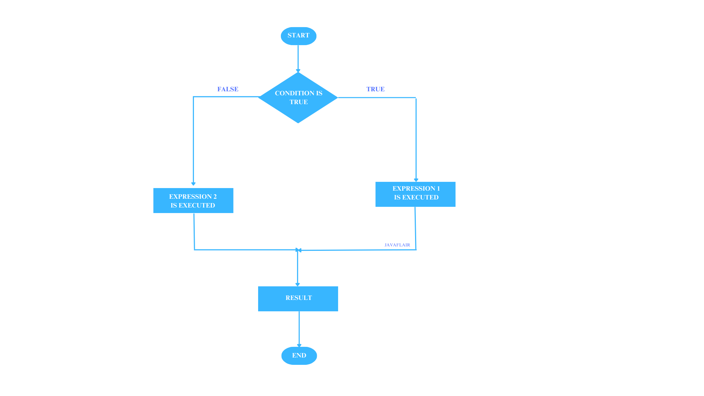

Java Control Statements
Introduction
In programming, control statements are essential tools that allow your code to make decisions. Think of them as the traffic lights of your program—guiding the flow and determining what happens next based on specific conditions. By mastering control statements, you’ll be able to write smarter, more efficient code!
Why Learn Control Statements?
- Decision-Making: Control statements help your programs respond to user input or data conditions dynamically.
- Flow Control: They enable your program to take different paths based on various conditions, leading to more interactive applications.
- Problem-Solving Skills: Understanding control flow enhances your logical thinking and problem-solving abilities.
Types of Control Statements
Control statements can be broadly categorized into three types:
- Conditional Statements
- These statements execute different code blocks based on whether a condition is true or false.
- Looping Statements
- Used to repeat a block of code multiple times as long as a specified condition is met.
- Branching Statements
- Alter the flow of control unconditionally.
Conditional Statements
Conditional statements are fundamental in programming, allowing you to execute different code based on certain conditions. They enable your program to make decisions and act accordingly, which is essential for creating dynamic and interactive experiences on a website.
Types of conditional statements
- If Statement
- If-Else Statement
- Else If Statement
- Nested If Statement
- Switch Statement
- Ternary Operator (Conditional Operator)
With a solid understanding of why control statements are crucial, let's dive into each type, step by step. Get ready to explore how these powerful tools can make your code more dynamic and responsive!
If Statement
- Purpose: An if statement checks a condition. If the condition is true, the code block inside it executes. If it’s false, the code is skipped.
- Explanation: This is the simplest form of conditional statement. It’s like asking a question: If this statement is true, do this.
if condition:
# code to execute if condition is true

Example:
int age = 18;
if (age >= 18) {
console.log("You are eligible to vote!");
}In this example, the code checks if age is 18 or older. If true, it prints a message about voting eligibility.
Please click on the 'Run' button to view the output.
If-Else Statement
- Purpose: The if-else statement provides an alternative action if the condition in the if is false.
- Explanation: Think of it as a fork in the road. If this condition is true, go left; otherwise, go right.
if condition:
# code if true
else:
# code if false

Example:
int time = 20;
if (time < 18) {
console.log("Good day!");
} else {
console.log("Good evening!");
}Here, the code checks if time is less than 18. If true, it greets with “Good day!” Otherwise, it greets with “Good evening!”
Please click on the 'Run' button to view the output.
Else If Statement
- Purpose: The else if statement lets you evaluate multiple conditions in sequence.
- Explanation: This allows for more complex decision-making, handling multiple outcomes.
if condition1:
# code for condition1
elif condition2:
# code for condition2
else:
# code if none are true

Example:
int score = 85;
if (score >= 90) {
"Grade: A";
} else if (score >= 80) {
"Grade: B";
} else if (score >= 70) {
"Grade: C";
} else {
"Grade: D";
}This code checks the value of score and assigns a grade based on the range it falls into: A, B, C, or D.
Please click on the 'Run' button to view the output.
Nested If Statement
- Purpose: A nested if statement is an if statement inside another if statement. It allows for checking multiple conditions in layers.
- Explanation: Imagine a series of gates: to get to the next condition, the previous one must be true.
if (condition1) {
if (condition2) {
// code if both condition1 and condition2 are true
} else {
// code if condition1 is true and condition2 is false
}
} else {
// code if condition1 is false
} Example:
int age = 20;
let hasID = true;
if (age >= 18) {
if (hasID) {
"Access granted!";
} else {
"Please show your ID.";
}
} else {
"Access denied. You are not old enough.";
}This code checks if the age is 18 or older, and if true, further checks if hasID is true to grant access, otherwise it asks for ID or denies access if under 18.
Please click on the 'Run' button to view the output.
Switch Statement
- Purpose: The switch statement is useful when you want to compare a variable against multiple specific values. It’s often a cleaner alternative to multiple else if statements.
- Explanation: Think of it as a menu. Based on this choice, do this.
switch (variable) {
case value1:
// code if variable === value1
break;
case value2:
// code if variable === value2
break;
// more cases can be added
default:
// code if variable doesn't match any case
}int day = 3;
switch (day) {
case 1:
dayName = "Monday";
break;
case 2:
dayName = "Tuesday";
break;
case 3:
dayName = "Wednesday";
break;
default:
dayName = "Other day";
}This code assigns a day name based on the value of day. If day is 1, it assigns "Monday"; if 2, "Tuesday"; if 3, "Wednesday". For any other value, it assigns "Other day".
Please click on the 'Run' button to view the output.
Note:Don't worry if you don't understand everything about the switch statement right now. We will study it in detail soon! This example gives you a basic idea of how it works.
Ternary Operator (Conditional Operator)
- Purpose: The ternary operator is a shorthand for if-else statements that is often used for simple conditions.
- Explanation: It takes three parts: condition ? value if true : value if false.
condition ? value_if_true : value_if_false;
Example:
int age = 16;
let message = age >= 18 ? "You can vote." : "You are too young to vote.";Please click on the 'Run' button to view the output.
Ready to Practice?
Ask the user to input a password and check its strength based on the following criteria:
- If the password length is 8 characters or more, display “Strong password.”
- If the password is less than 8 characters but at least 5, display “Medium password.”
- If the password is shorter than 5 characters, display “Weak password.”
Downloadable Notes
Access comprehensive notes to complement your learning journey:
📄 Click here to download the notes